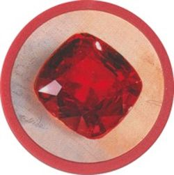
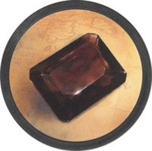

스플렌더
보석을 모아 개발 카드를 구매하고, 영구 할인과 귀족의 후원을 받아 명성 15점을 향해 나아가요.
스플레터 플레이해보기 · 온라인 2~4인방 코드로 친구들과 함께하거나 컴퓨터와 플레이할 수 있어요. 멀티방은 기본 30초이며, 방장이 대기실에서 15·30·45·60·90·120·180초 중 고를 수 있어요. 컴퓨터를 한 명씩 추가하거나 빈자리를 모두 채울 수도 있어요. 컴퓨터 연습은 시간 제한이 없어요. 기본판 규칙을 적용하며 확장은 포함하지 않아요.
아래는 기존 카드 그림을 예로 설명해요. 온라인 플레이판은 새 2D 그림을 쓰며, 비용·보너스·명성 수치는 동일해요.
카드에서 세 곳만 먼저 보세요.
- 1. 왼쪽 위 숫자 = 명성 점수
- 이 카드를 구매하면 1점을 얻어요. 숫자가 없는 카드는 0점이지만 할인 보너스는 똑같이 생겨요.
- 2. 오른쪽 위 보석 = 영구 할인
- 구매한 뒤부터 사파이어 비용을 매번 1개 할인받아요. 이 보석이 카드의 색을 정해요. 그림이나 아래 비용의 색은 카드 색을 정하는 기준이 아니에요.
- 3. 아래 보석과 숫자 = 구매 비용
- 할인이 없다면 사파이어 2개 + 에메랄드 2개 + 루비 3개를 모두 내야 해요. 부족한 색은 황금으로 대신 낼 수 있어요.
명성과 할인은 서로 달라요. 이 카드는 사파이어 할인 1개와 명성 1점을 줘요. 보석 토큰이 많거나 구매 카드 장수가 많다는 것만으로 명성이 늘지는 않아요.
보석 이름과 색을 맞춰 봐요.
- 다이아몬드흰색
- 사파이어파란색
- 에메랄드초록색

루비빨간색
오닉스검정·초콜릿색- 황금다른 색 대신
| 구분 | 보석 토큰 | 구매한 개발 카드 |
|---|---|---|
| 사용 방법 | 구매 비용으로 지불해요. | 카드 1장마다 그 색 비용을 1개 할인해요. |
| 쓴 뒤에는? | 은행으로 돌아가요. | 내 앞에 남아 다음 구매에도 적용돼요. |
| 10개 제한 | 황금까지 포함돼요. | 포함되지 않아요. |
| 귀족 방문 | 방문 조건으로 세지 않아요. | 색별 보유 장수로 조건을 채워요. |
예: 파란 개발 카드가 3장이면 사파이어 비용을 매 구매마다 3개 할인받아요. 사파이어 토큰 3개를 새로 받는 효과는 아니에요.
친구들과 어떻게 시작하나요?
- 플레이해보기에서 내 이름을 입력하고 친구들과 할 방 만들기를 눌러요.
- 초대 링크나 6자리 방 코드를 친구에게 보내요. 친구는 같은 주소에서 이름과 코드를 입력해 입장해요.
- 2~4명이 모이면 방장이 선 플레이어를 정하고 시작해요. 공식 규칙은 가장 어린 사람이 먼저예요.
- 한 차례에 행동 하나를 해요. 일반 차례의 제한 시간은 없고, 필요한 반환·귀족 선택까지 끝나면 다음 사람에게 넘어가요.
내 차례에 하는 행동
| 행동 | 무엇을 하나요? | 꼭 확인해요 |
|---|---|---|
| 다른 색 보석 | 서로 다른 색 3개를 하나씩 가져와요. | 3색이 남아 있지 않으면 가능한 서로 다른 색을 가져와요. 황금은 제외예요. |
| 같은 색 보석 | 한 색의 보석 2개를 가져와요. | 가져오기 전에 그 색이 4개 이상 남아 있어야 해요. |
| 개발 카드 구매 | 공개 카드나 내 예약 카드의 비용을 내고 구매해요. | 구매한 보너스만큼 비용이 줄어요. 황금으로 다른 색을 대신 낼 수 있어요. |
| 개발 카드 예약 | 공개 카드 또는 덱 맨 위 1장을 예약하고 황금 1개를 받아요. | 예약은 최대 3장. 황금이 없어도 예약할 수 있어요. 덱에서 예약하면 앞면은 나만 봐요. |
왜 이 보석은 선택할 수 없나요?
다른 색 3개: 예를 들어 사파이어·에메랄드·루비를 1개씩 가져와요. 은행에 세 종류 이상 남아 있다면 서로 다른 세 색을 골라야 해요. 남은 보석 색이 두 종류뿐이면 그 두 색을 하나씩 가져와요. 황금은 색 종류에 포함하지 않아요.
같은 색 2개: 루비가 4개 남아 있다면 2개를 가져올 수 있어요. 3개만 남았다면 같은 색 2개 가져오기는 선택할 수 없어요. 기준은 가져오기 전 은행의 개수예요.
차례 끝 10개 제한: 9개를 가진 상태에서 3개를 가져오면 잠시 12개가 돼요. 원하는 토큰 2개를 반환해 10개로 맞춰요. 방금 가져온 보석과 황금도 반환할 수 있어요.
보석 가져오기와 카드 구매를 같은 차례에 함께 할 수는 없어요. 한 행동을 마친 뒤 필요한 반환과 귀족 방문까지 처리하면 다음 사람에게 차례가 넘어가요.
실제로 내야 할 보석을 계산해 봐요.
위 카드의 원래 비용은 사파이어 2·에메랄드 2·루비 3이에요. 이미 구매한 개발 카드의 할인을 먼저 빼고, 남은 비용을 보석과 황금으로 내요.
- 이미 구매한 개발 카드의 색별 장수를 세어요.
- 각 색의 원래 비용에서 그 색 할인 장수를 빼요. 0보다 작으면 0으로 봐요.
- 남은 비용을 색 보석과 황금으로 지불해요. 낸 토큰은 은행으로 돌아가요.
- 새 카드를 내 앞에 두어요. 명성 1점과 사파이어 영구 할인 1개가 추가돼요.
이번에 살 카드의 보너스는 다음 구매부터예요. 이 카드가 파란색이어도, 이번 비용에서 사파이어 1개를 미리 빼지는 않아요.
내 할인과 보석 수를 바꿔 보세요.
좁은 화면에서는 표를 옆으로 밀어 볼 수 있어요. 계산 예시이며 실제 게임 방의 자산은 바뀌지 않아요.
| 색 | 원래 비용 | 내 할인 개발 카드 장수 | 내 보석 토큰 개수 | 할인 후 비용 |
|---|---|---|---|---|
| 사파이어 | 2개 | 1개 | ||
| 에메랄드 | 2개 | 2개 | ||
| 루비 | 3개 | 1개 |
사파이어 1개 + 에메랄드 1개 + 루비 1개 + 황금 1개를 내요.
- 사파이어: 비용 2 − 할인 1 = 1개 필요.
- 에메랄드: 비용 2 − 할인 0 = 2개 필요. 보석 1개와 황금 1개로 채워요.
- 루비: 비용 3 − 할인 2 = 1개 필요.
계산기는 같은 색 보석을 먼저 쓰고, 모자란 수만 황금으로 채우는 예시예요. 실제 게임에서는 해당 색 보석을 갖고 있어도 황금으로 대신 지불할 수 있어요.
할인만으로 살 수 있어도 행동 하나를 써요.
사파이어 할인 2장·에메랄드 할인 2장·루비 할인 3장을 이미 갖고 있다면 이 카드의 비용은 모두 0이에요. 보석을 내지 않고 구매하지만 이번 차례의 행동 하나로 처리해요. 남는 할인만큼 보석을 받지는 않아요.
예약하면 무엇이 달라지나요?
원래 비용은 에메랄드 4개예요.
이 카드를 갖고 싶지만 에메랄드가 부족할 수 있어요. 예약하면 다른 사람이 이 카드를 구매할 수 없고, 이후 내 차례에 비용을 내고 구매할 수 있어요.
아직 구매한 것은 아니라서 예약만으로는 명성이나 할인이 생기지 않아요. 예약과 구매는 각각 행동 하나이므로 같은 차례에 둘 다 하지 못해요.
공개 카드 1장을 고르거나, 원하는 레벨의 덱 맨 위 카드를 앞면을 미리 보지 않고 예약해요. 은행에 황금이 있으면 1개를 받고, 없으면 카드만 예약해요.
- 예약은 최대 3장이고, 예약 카드를 구매하면 한 자리가 비어요.
- 예약 카드를 버리거나 다른 카드로 바꿔서 자리를 만들 수는 없어요.
- 황금은 예약한 카드뿐 아니라 어떤 개발 카드 구매에도 사용할 수 있어요.
- 예약 중 받은 황금으로 보석이 11개가 됐다면 토큰 1개를 반환해요. 방금 받은 황금을 반환해도 예약 카드는 유지돼요.
- 게임 종료 시 남은 예약 카드에는 점수도 벌점도 없어요.
공개 카드가 빠진 자리: 누군가 구매하거나 예약하면 같은 레벨 덱에서 새 카드 1장을 공개해요. 해당 덱이 다 떨어졌다면 빈자리로 두어요.
귀족의 숫자는 무엇을 뜻하나요?
이 귀족은 내 앞에 파란 개발 카드 4장 이상과 흰 개발 카드 4장 이상이 있어야 방문해요. 보석 토큰이나 황금을 내서 조건을 대신할 수는 없어요.
4장+다이아몬드
4장→ 명성 3점
조건을 채운 채 내 차례가 끝나면 방문해요. 개발 카드와 그 할인은 그대로 남고, 귀족의 명성 3점도 계속 유지돼요.
귀족 방문에는 별도 행동이나 보석 지불이 필요하지 않아요. 여러 귀족의 조건을 동시에 채웠다면 이번 차례에 1명만 선택해요. 다른 귀족은 남아 있다면 다음 내 차례 끝에 다시 조건을 확인해요.
할인·보석·귀족의 차이
- 보석은 한 번 쓰는 지불 수단: 비용으로 낸 보석은 은행으로 돌아가요.
- 할인은 계속 남는 보너스: 구매한 카드 1장은 그 색 보석 비용을 매번 1개 줄여 줘요. 보석 10개 제한에는 포함하지 않아요.
- 황금은 원하는 색 대신 사용: 예약한 카드가 아닌 다른 카드를 살 때도 쓸 수 있고, 해당 색 보석이 있어도 대신 지불할 수 있어요.
- 귀족은 할인 보너스로 방문: 차례 끝에 조건을 만족하면 방문해 3점을 줘요. 여러 귀족이 가능하면 1명만 골라요. 보석을 내거나 별도 행동을 쓰지 않아요.
차례 끝에 보석은 최대 10개. 넘었다면 원하는 보석을 골라 10개가 되도록 반환해요. 방금 가져온 보석이나 황금도 반환할 수 있어요.
준비와 승리 조건
레벨별 덱을 섞고 각 레벨에서 4장씩, 총 12장의 개발 카드를 공개해요. 각자 보석·구매 카드·예약 카드 없이 시작해요. 레벨 1은 40장, 레벨 2는 30장, 레벨 3은 20장으로 구성돼요.
| 인원 | 색 보석 각각 | 황금 | 귀족 |
|---|---|---|---|
| 2인 | 4개 | 5개 | 3명 |
| 3인 | 5개 | 5개 | 4명 |
| 4인 | 7개 | 5개 | 5명 |
누군가 차례를 끝냈을 때 15점 이상이면 현재 라운드의 마지막 플레이어까지 진행해 모두 같은 수의 차례를 받아요. 최고 명성이 승리하고, 동점이면 구매한 개발 카드가 더 적은 사람이 이겨요. 그것도 같으면 공동 승리예요.
결과 예시로 확인해요.
| 상황 | 결과와 이유 |
|---|---|
| A가 먼저 15점, 같은 라운드에서 B가 16점 | 최종 명성이 높은 B가 이겨요. |
| A·B 모두 16점. 구매 개발 카드는 A 8장, B 9장 | 개발 카드가 더 적은 A가 이겨요. |
| 명성과 구매 개발 카드 장수가 모두 같음 | 공동 승리예요. |
동점에서 비교하는 구매 개발 카드 장수에는 귀족과 예약 카드를 포함하지 않아요.
온라인에서는 어디를 누르나요?
- 보석을 가져오려면
- 보석 은행에서 색을 누르고, 다른 색 3개 / 같은 색 2개 방식을 확인한 뒤 보석 가져오기를 눌러요. 고른 색을 다시 눌러 취소할 수 있어요.
- 구매·예약하려면
- 공개 카드 앞면을 눌러 창을 열어요. 할인 적용 후 지불을 확인하고 구매 또는 예약을 골라요. ‘구매 가능’ 표시는 현재 내 할인과 보석·황금으로 비용을 채울 수 있다는 뜻이에요.
- 뒷면 예약을 하려면
- 왼쪽 레벨 1 / 레벨 2 / 레벨 3 뒷면 덱을 눌러요. 덱에 카드가 남아 있고 예약 카드가 3장 미만이어야 해요.
- 이미 가진 카드를 보려면
- 아래 내 예약 카드나 색별 구매 카드를 눌러요. 플레이어 영역을 누르면 그 사람의 공개 자산을 확인할 수 있어요.
처음에 자주 헷갈리는 규칙
레벨 1을 먼저 사야 레벨 2를 살 수 있나요?
그런 순서 제한은 없어요. 비용을 낼 수 있다면 공개된 어느 레벨 카드든 구매할 수 있어요. 예약할 때도 레벨 제한은 없어요.
할인 카드는 사용할 때마다 버리나요?
내 앞에 계속 남아요. 같은 색 개발 카드가 늘어날수록 그 색 할인도 누적돼요. 구매한 개발 카드의 장수 제한은 없어요.
0점 카드도 사면 도움이 되나요?
명성은 바로 늘지 않지만 영구 할인 1개가 생겨요. 이후 카드 비용을 줄이고 귀족의 색별 카드 장수 조건도 채워요.
상대의 예약 카드 앞면은 볼 수 있나요?
게임 중에는 그 사람만 확인해요. 보석 수, 구매한 개발 카드, 보너스와 명성, 방문한 귀족은 공개 정보예요.